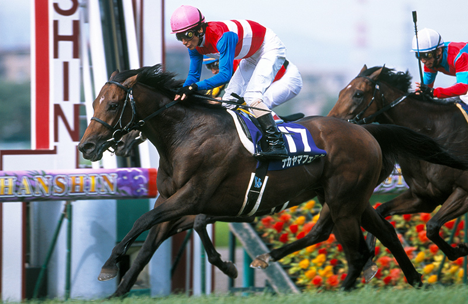

「世界を震撼させたステイの魂」凱旋門賞の衝撃
ナカヤマフェスタ

2010年の宝塚記念を制し、単身フランスへ。凱旋門賞では名牝ワークフォースと壮絶な叩き合いを演じ、日本調教馬としてエルコンドルパサー以来となる2着に食い込みました。欧州の重い芝を苦にしないパワーと、相手が強ければ強いほど燃える気性の激しさを併せ持った、ステイゴールド一族の「闘争心」の象徴です。
基本データ
- 主な鞍上： 蛯名正義、柴田善臣
- 獲得賞金： 約4億1140万円
- 通算成績： 15戦5勝
- 脚質： 差し
-
血統（父母）：
- ステイゴールド
- ディアウィンク
能力パラメータ
※独自解析による競走能力アーカイブ
全戦績
| 年 | レース名 | 着順 | 着差 | 鞍上 |
|---|---|---|---|---|
| 2008 | 2歳新馬 | 1着 | 1 1/2馬身 | 柴田善臣 |
| 2008 | 東スポ杯2歳S | 1着 | ハナ | 蛯名正義 |
| 2009 | 京成杯 | 2着 | 0.1秒 | 柴田善臣 |
| 2009 | 皐月賞 | 8着 | 0.5秒 | 柴田善臣 |
| 2009 | 日本ダービー | 4着 | 0.7秒 | 柴田善臣 |
| 2009 | セントライト記念 | 1着 | 1/2馬身 | 蛯名正義 |
| 2009 | 菊花賞 | 12着 | 2.0秒 | 蛯名正義 |
| 2010 | 中日新聞杯 | 13着 | 1.2秒 | 柴田善臣 |
| 2010 | メトロポリタンS | 1着 | クビ | 柴田善臣 |
| 2010 | 宝塚記念 | 1着 | 1/2馬身 | 柴田善臣 |
| 2010 | フォワ賞(仏) | 2着 | クビ | 蛯名正義 |
| 2010 | 凱旋門賞(仏) | 2着 | アタマ | 蛯名正義 |
| 2010 | ジャパンC | 14着 | 1.1秒 | 蛯名正義 |
| 2011 | フォワ賞(仏) | 4着 | - | 蛯名正義 |
| 2011 | 凱旋門賞(仏) | 11着 | - | 蛯名正義 |
主な産駒（子供たち）
- バビット（セントライト記念・ラジオNIKKEI賞）
- ガンコ（日経賞）
- ヴォージュ（万葉S）
- エポカドーロの母など（母父としての貢献）
※リンクがある馬は詳細ページへ移動できます
伝説の瞬間：ロンシャンに刻んだ「アタマ差」の夢
2010年10月3日。凱旋門賞の直線、海老名騎手の激に応えて最内から伸びてきたナカヤマフェスタ。最後はワークフォースとの壮絶な叩き合い。一瞬、勝利を確信させたその走りは、世界中の競馬ファンを驚かせました。結果はアタマ差の2着。しかし、日本馬でも凱旋門賞を勝てる、という確かな希望を再び灯したその姿は、ステイゴールド一族が持つ「底知れぬ力」を世界に知らしめた瞬間でした。